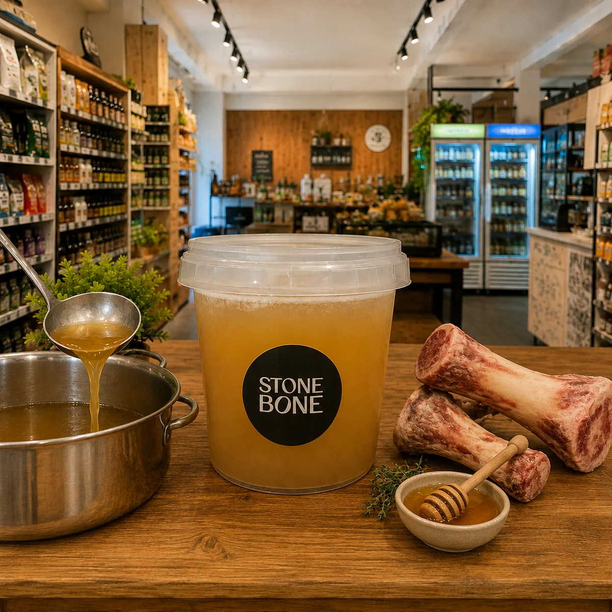

Proteína colágena real. Slow-cooking artesanal, sem aditivos.
Para quem cuida do corpo de dentro pra fora.

🍲Bone Broth real — não é caldo industrializado. É slow-cooking artesanal com procedência.
É exatamente por isso que o resultado é diferente.
"Proteína colágena real. Slow-cooking artesanal, sem aditivos. Para quem cuida do corpo de dentro pra fora."Lia Toss — Empório Orgânico & Natural
Lagoa da Conceição, Florianópolis. Seg a Sáb.